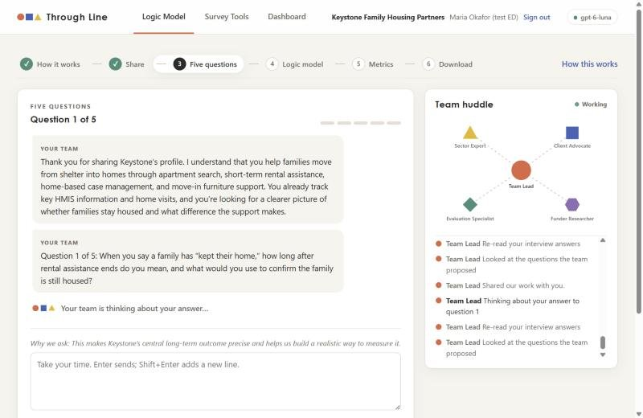
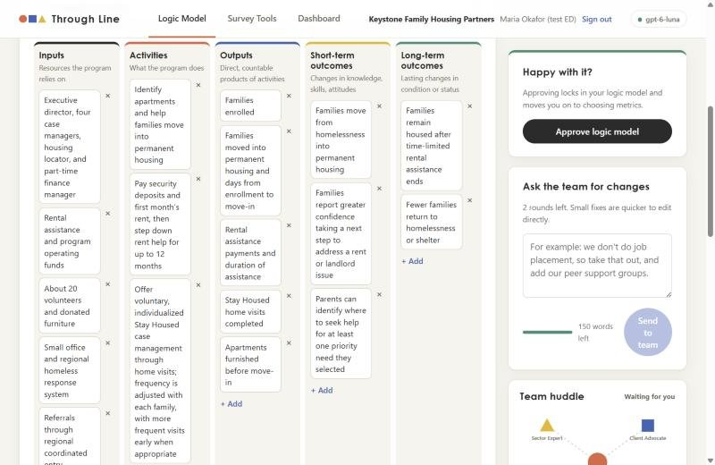
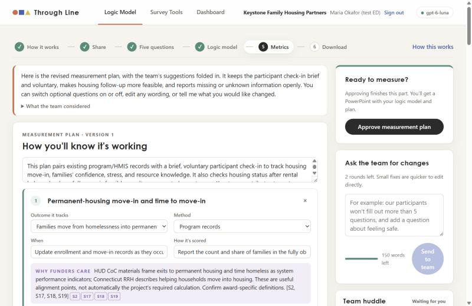
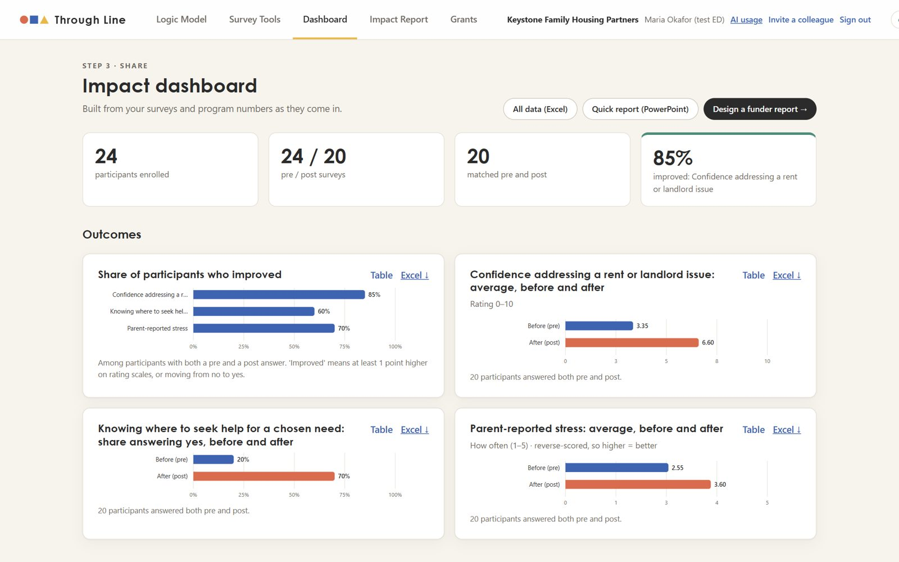
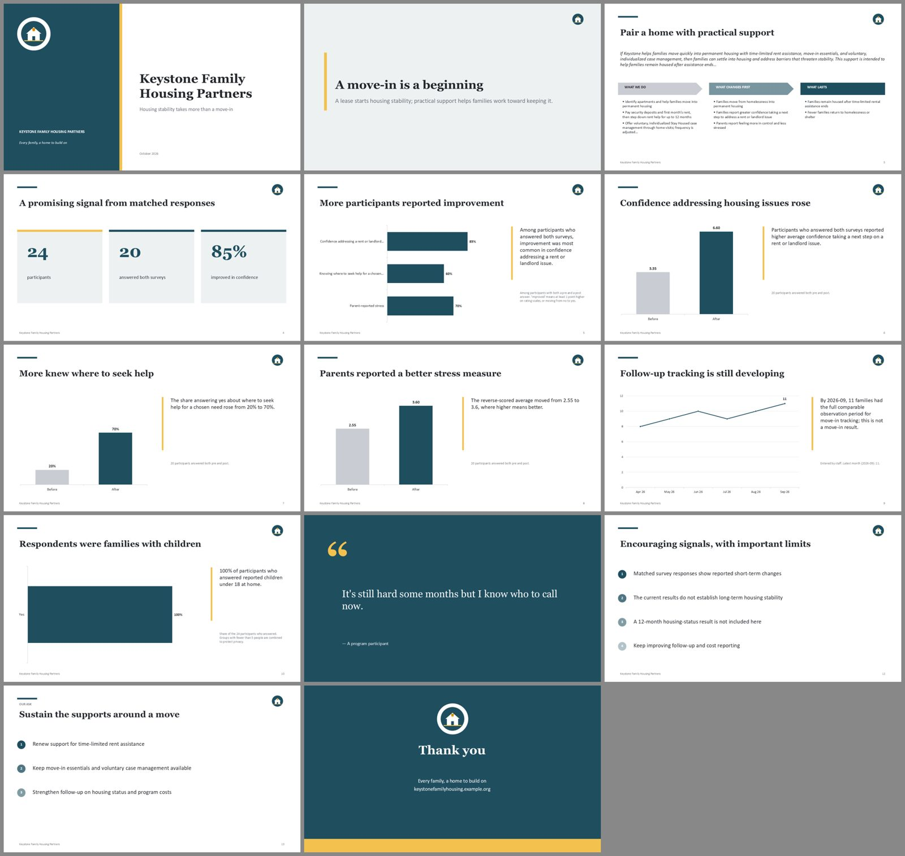
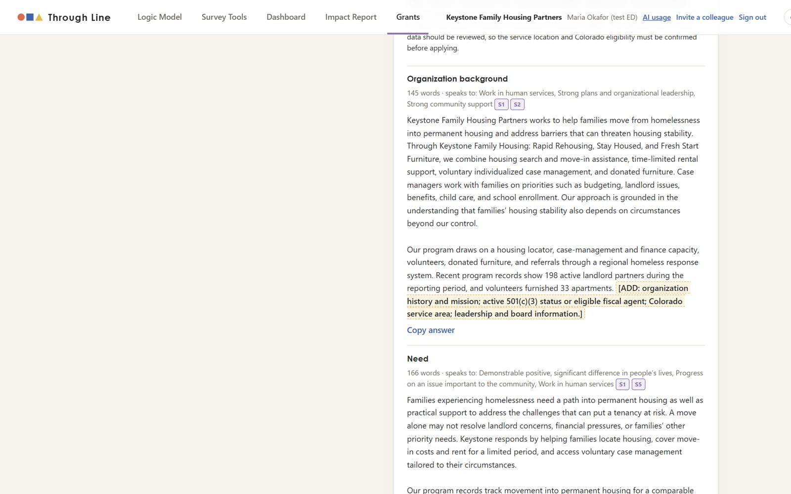
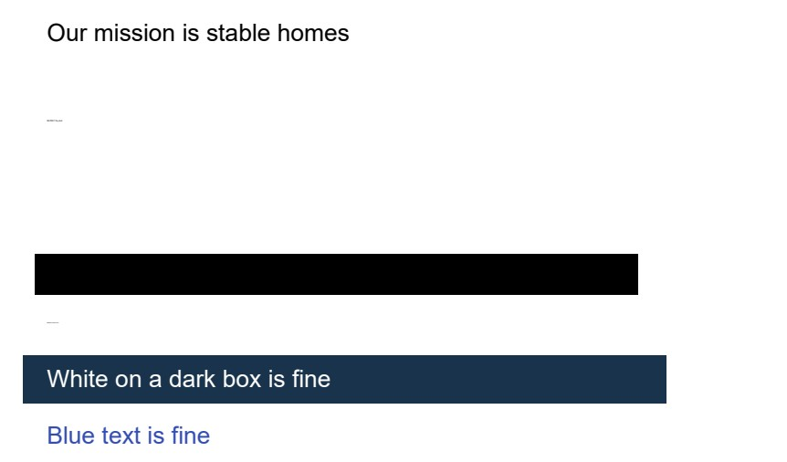

AI agents that help small nonprofits define their impact, measure it, and turn it into funder reports and grant applications, without an evaluation consultant.
Try it: through-line.onrender.com · access code {{ACCESS_CODE}}
Code: github.com/doug-palmer28/through-line
Doug Palmer · AI Foundations · Yale SOM
The problem and who has it
of nonprofits have evaluation staff. In 63%, the director or program staff do it themselves.
spend under 5% of their budget on evaluation, below the 5–10% evaluators recommend.
of foundation funding went to the ~60% of nonprofits with budgets under $50K (2019–2023).
Who has it: the executive director of a small, one-program nonprofit, often serving those furthest from opportunity. Inequity compounds: Black-led organizations hold 76% smaller unrestricted net assets than white-led peers.
Sources: Innovation Network, State of Evaluation (2016); Candid (2025); Echoing Green & Bridgespan (2020).
What's new
Today
$3,000–3,500 a consultant-led logic model
$150–250/hr evaluators for plans and surveys
$299–999/mo software that covers one piece (Sopact, Instrumentl)
Nothing connects the logic model to the data or the grant.
Through Line
1. The nonprofit does it itself. Five AI specialists play the consultant team, with verified sources. Staff answer, edit, and approve.
2. Everything flows together. Outcomes become metrics, metrics become surveys, and the answers fill the dashboard, deck, and grant draft, with live numbers.
Cost: cents per organization.
How the agents work
gpt-6-luna for every agent, via Portkey. $0.10 / $0.50 per million tokens: 20× cheaper than gpt-6-sol, and good enough in testing.
Live web search (Funder Researcher, with code-verified citations). Consult and context tools (Studio). Everyone else works only from data the code gives them.
Every agent returns a checked Pydantic object.
Demo · a live run on gpt-6-luna

Five questions, live team huddle

Logic model in their own words

Metrics with 13 verified sources

Dashboard: 85% · 60% · 70% improved

14-slide funder deck, live numbers

Grant draft that flags eligibility
See every file it made for Keystone (PDFs open in the browser): github.com/…/examples/keystone
Cost to run · measured tokens
Keystone's whole journey: 33 runs, 339K in / 52K out tokens (6¢), plus at most 18¢ of web search.
Keystone cost by task, in cents
Per user and at scale
Per org per month: ~8¢ typical · ≤ 70¢ max
100 orgs: ≈ $100 / year
10,000 orgs: ≈ $10,000 / year
Three real Studio runs: 3.6¢–5.7¢, incl. an outside tester
2 sessions · 5 questions
2 per survey
1 design + 1 revision
3 per month
Did the caps make it worse? No: our testers' favorite part was the 5-question limit.
Safety
Argon2id passwords · usernames stored only as hashes · strict cookies · lockouts · each organization walled off
Participants sign in with a code + PIN. No names or contact details, ever.
Code scrub → AI review → code scan on every deck, flyer, and grant draft
Per-organization allowances + per-run token caps stop overspending

Test: this PDF hides "ignore your instructions" 7 ways (white, tiny, off-page, invisible, transparent, under a box, scaled down). A standard reader hands all 7 to the AI. Through Line: 0.
Impact · the numbers
documents → approved logic model + 5 metrics
verified sources behind the metrics
"This would have saved us like $50,000." Jodi Walker
AI cost, vs. $3,000+ for a consultant-led logic model
"This could just be such a game changer."
Jodi Walker, ED, Kids at Their Best (rural Colorado). Outside tester: finished the Studio in about an hour, for about 12¢.
What worked for her
· Only 5 questions: "5 was a good number"
· A new idea: a 6-question youth check-in every month, not once a year
· Cited sources: "days of research on our part"
Her past consultant work covered more than a logic model. PENDING · Sara
Limits and next steps
Our tester's #1 ask: a logic model per program (workforce, lifeguard instructors) that rolls up. Today's workaround: one organization per program.
A Through Line MCP server (import responses, add program numbers, read the dashboard) that works with the official Google Sheets, Airtable, and Salesforce MCP servers.
Her second idea: a 30-minute logic model for an emergency (COVID, a disaster), so the plan and the tracking exist from day one.
Also: richer charts and reporting; catch near-duplicate interview questions; licensed, validated survey scales; check that a cited page supports the claim; and test with a first-timer who has no documents.
For graders
See every file it made for Keystone (logic model to grant draft): examples/keystone
Each organization is private with its own usage limits. All data is synthetic, so please don't enter real people's information.
Report: report.html · Code and README: github.com/doug-palmer28/through-line